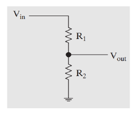
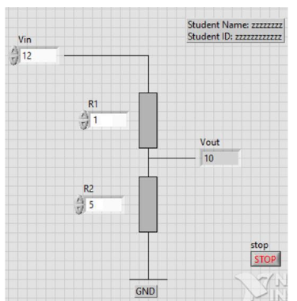
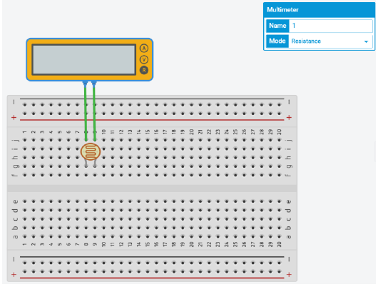
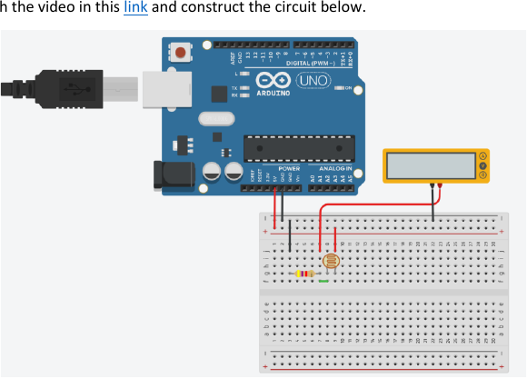
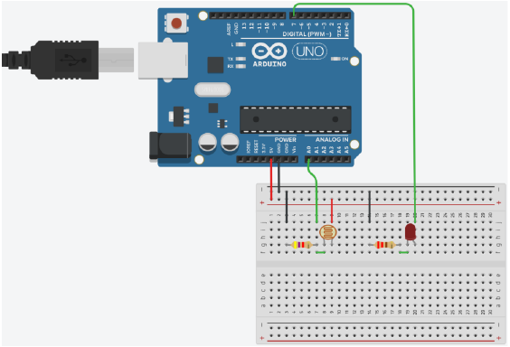
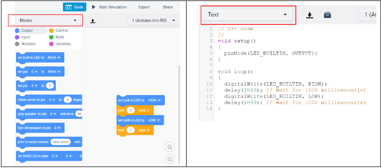

Before the lab sequence
Readiness and Combined Objectives
Laboratory 1 introduces the LabVIEW graphical programming environment. Later sections apply the same voltage-divider idea to a photoresistor, Arduino analog input, LED digital output, and real-bench measurement.
Final Evidence
Submit the LabVIEW VI and quiz; show Tables 1-4 and demonstrate Exercises 4 and 5.
How to Use This Interactive Page
Auto checks
10 points
Ten concept checks with hints and retry support.
Lab record
Tables 1-4
Measurement fields save locally in this browser.
The page preserves the staged format of the original template: complete each checklist, table, and auto-graded question before advancing.
Learning Outcomes
- Recognize LabVIEW fundamentals: controls, indicators, VIs, SubVIs, data types, arrays, clusters, loops, and shift registers.
- Create a LabVIEW VI that calculates voltage-divider output.
- Measure how photoresistor resistance changes as light level changes.
- Use a voltage divider to convert resistance variation into voltage variation.
- Wire a sensor to Arduino A0 and an LED to digital pin 7.
- Program an automatic lighting system using a threshold decision.
Required Before Starting
Concept Flow
Calculate Vout
Resistance changes
Voltage changes
Read analog level
React to low light level
Auto-Graded Readiness Check
Answer both questions correctly before moving into the activities.
Laboratory 1
Introduction to LabVIEW
Approved Learning Resources
Begin with the linked Master Skill Tree topics. They explain the LabVIEW workspace and the reusable skills needed for this activity without relying on an external video service.
Instructor resource needed
Provide a replacement course video or approved learning resource that explains the LabVIEW front panel, block diagram, controls, indicators, and basic VI workflow.
Voltage Divider Equation
Vout = Vin * R2 / (R1 + R2)

Build the Voltage-Divider VI
Build a LabVIEW VI that represents and evaluates a voltage-divider circuit. Create an appropriate front-panel interface, add the required controls and indicators, and construct the corresponding block-diagram logic.

Beginner Build Sequence
- Start a blank VI. A VI is the LabVIEW program file; it has a front panel for the user interface and a block diagram for program logic.
- On the front panel, place three numeric controls named
Vin,R1, andR2. A control supplies a value to the program. - Place one numeric indicator named
Vout. An indicator displays a value calculated by the program. - Open the block diagram and use arithmetic functions and wires to implement
Vout = Vin × R2 ÷ (R1 + R2). Wires carry data from controls through functions to the indicator. - Place the calculation inside a While Loop, add a Boolean
Stopcontrol, and wire it to the loop Stop terminal. - Run the VI, change the three inputs, and confirm that
Voutupdates. End the program with the Stop control, not the Abort button. - Add your name and student number to the front panel, then save the file with the
.viextension.
Why the While Loop is used
The While Loop repeatedly updates the voltage-divider calculation and keeps the front panel responsive while the VI runs. It continues until the programmed Stop condition is met, so the student can change inputs without pressing Run again. Stop the VI with its Stop control rather than the Abort button.
Submit the LabVIEW VI
- Select your completed
.vifile in the HTML-page evidence dropbox below. - The portal records the filename locally in this browser and in the completion JSON; it does not upload or embed the VI contents.
- Submit the actual
.vifile through the Lab 1 Avenue to Learn submission location identified by your instructor. - Complete the Lab 1 quiz on Avenue to Learn.
Lab 1 - Part 2
Measure Photoresistor Resistance
Build Steps
- In Tinkercad, select New, then Circuit.
- Find a photoresistor in the component list.
- Place it so its two legs are in separate breadboard rows.
- Add a multimeter and connect the meter leads across the two photoresistor legs.
- Set the multimeter mode to Resistance.
- Record measurements at 0%, 25%, 50%, 75%, and 100% light.

Table 1 - Photoresistor Resistance
| Light | 0% | 25% | 50% | 75% | 100% |
|---|---|---|---|---|---|
| PR resistance (Ω) |
Record photoresistor resistance in ohms so the checkpoint validation can check for likely measurement-entry errors.
Lab 1 - Part 3
Simulate the Voltage Divider
Why the Divider Matters
The photoresistor changes resistance with light. The Arduino analog input reads voltage, so the divider converts resistance variation into a measurable sensor voltage.
Divider Rule
Vout = Vin * R2 / (R1 + R2)
In this sensor sequence, the fixed resistor is 4.7 kΩ and the photoresistor changes with light.
Circuit Steps
- Add the fixed resistor so it shares one row with the photoresistor junction.
- Set the resistor value to 4.7 kΩ.
- Connect one end of the divider to 5 V and the other end to GND.
- Connect Arduino 5 V and GND to the same power rails used by the divider.
- Measure the divider junction voltage relative to ground.
- Set the multimeter mode to Voltage.

Table 2 - Divider Voltage
| Light | 0% | 25% | 50% | 75% | 100% |
|---|---|---|---|---|---|
| Voltage (V) |
Record measured voltage at the same light levels used in Table 1.
Checkpoint 4 · Source Manual Exercise 4
Connect and Program the Automatic Lighting System

Connection Steps
- Delete the multimeter.
- Connect the divider junction to Arduino Analog Input A0.
- Add the LED and a 220 Ω current-limiting resistor in series.
- Connect the LED circuit between Arduino digital output pin 7 and ground, using the correct LED polarity.
- Before running code, confirm common ground is shared by the divider and LED circuit.
// Add variables for the photoresistor input, LED output, sensor reading, and threshold.
void setup()
{
// Set the LED pin mode.
}
void loop()
{
// Read the analog value from A0.
// Compare the value against the low-light threshold.
// Write HIGH or LOW to the LED pin based on that comparison.
}
Program and Verify
- Click Code at the top right of Tinkercad.
- Change edit mode from Blocks to Text.
- Enter the automatic lighting sketch.
- Start the simulation and change light level.
- Confirm the LED turns on when the sensor reading is below 400.
Checkpoint 5 · Source Manual Exercise 5
Real Photoresistor Divider
Build the real circuit, compare calculated and measured voltage, then show the required demonstrations.
Equipment Required
- Trainer board with internal power supply - quantity 1
- Photoresistor - quantity 1
- 4.7 kΩ resistor, 0.25 Watt - quantity 1
- Multimeter - quantity 1
Measurement Conditions
- Dark: cover the top surface of the sensor with your finger.
- Normal light: use the ambient room condition.
- Flashlight: shine your phone flashlight on the sensor surface.
Tables 3 and 4
| Light | Dark | Normal | Flashlight |
|---|---|---|---|
| Total resistance (kΩ) |
| Light | Dark | Normal | Flashlight |
|---|---|---|---|
| Voltage (V) calculated | |||
| Voltage (V) measured |
Use the voltage-divider rule for calculated values, then use a voltmeter to measure sensor voltage under the same conditions and compare the evidence.
Final External Confirmations
Use these only for requirements the portal cannot verify automatically.
Submission Rules From the PDFs
- Laboratory 1: select the
.vievidence on the Submission subpage, submit the actual VI through the instructor-identified Avenue to Learn location, and complete the Lab 1 quiz. - No separate report is required for the photoresistor demonstration sequence unless your instructor requests one.
- Show Tables 1-4 to the lab instructor.
- Demonstrate Checkpoint 4: Automatic Lighting System and Checkpoint 5: Real Photoresistor Divider to the lab instructor.
Learning Outcomes Achieved
- Built and tested a LabVIEW VI with front-panel controls, an indicator, block-diagram arithmetic, and a responsive While Loop.
- Measured photoresistor resistance and used a voltage divider to convert changing resistance into a measurable voltage.
- Connected Arduino analog input A0 and digital output D7, then tested threshold-based automatic lighting.
- Compared calculated and measured real-circuit values and presented traceable evidence for instructor review.